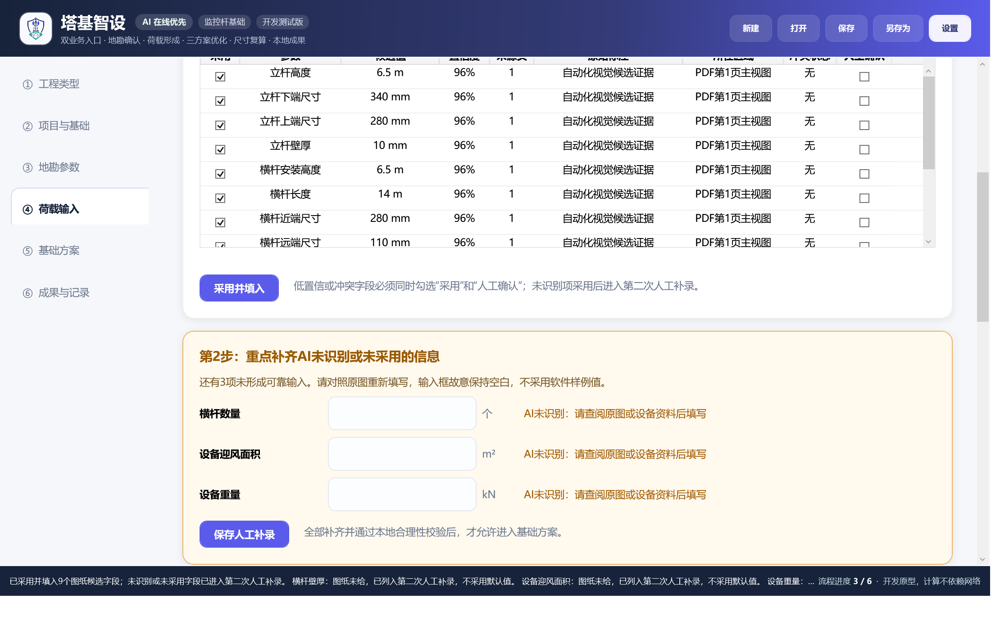
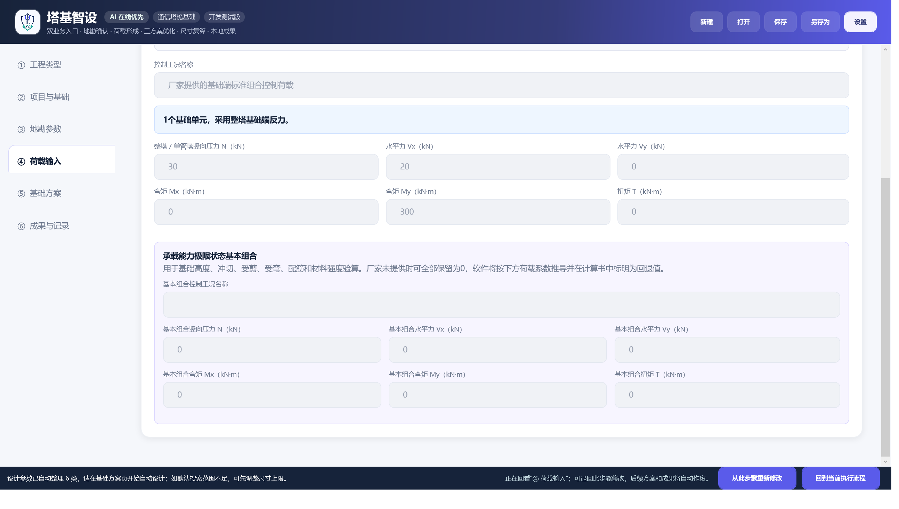
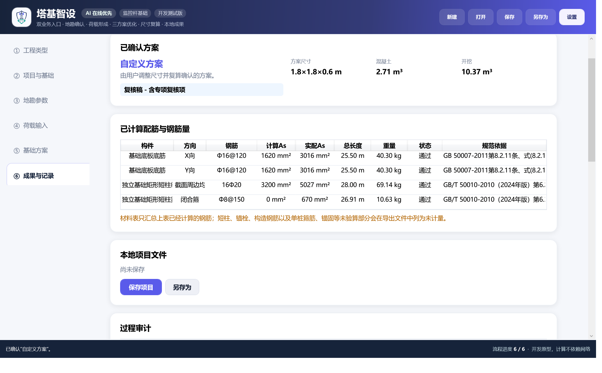

双业务入口
通信塔桅与监控杆采用各自荷载形成方式，之后统一进入地勘、方案和成果流程。
核心能力
通信塔桅与监控杆采用各自荷载形成方式，之后统一进入地勘、方案和成果流程。
保留文件、页码、原始标注、所在区域、置信度和冲突；低置信字段必须人工确认。
结构计算不交给模型；无网时仍可手工输入、搜索方案、复算、保存和导出。
矩形/圆形独基、筏板、圆形/矩形刚性短柱桩、独立灌注桩，并支持三/四塔脚拓扑。
圆形管、正八边形对角尺寸管和分段横杆逐段计算，禁止用平均壁厚替代。
生成计算书、DXF、材料表、下料表和工程量；缺参时强制标记复核稿。

AI 候选不是计算结果
施工图没有给设备迎风面积或重量时，系统保留空值，不覆盖用户已有输入。采用候选后，未识别项目集中进入第二次人工补录，全部通过本地合理性校验后才能继续。
六步操作
退回历史步骤后保留原始输入，并自动作废后续方案和成果；跨流程浏览始终显示“回到当前执行流程”。

塔桅荷载与组合输入

配筋、材料和工程量成果
公开边界
C# / WPF 源码、确定性计算模块、测试、构建配置、公开截图和设计文档。
API Key、根私钥、客户授权、规范 PDF、企业荷载数据、施工图、地勘报告、旧 Excel、商业字体和用户项目。
软件输出必须经有资质的专业人员复核，不能直接替代施工图审查、专项设计或法定审批。